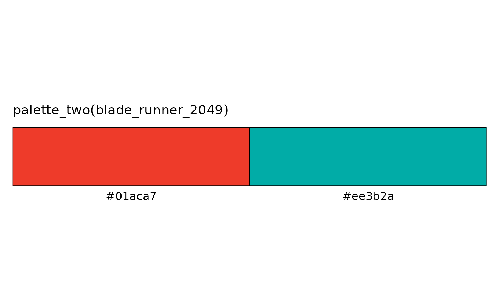

Palettes with two constrast colors
palette_two.RdPalette with two constrast colors, with the following palettes:
- boba_fett: Inspired by the TV series Boba Fett.
- blade_runner_2049: Inspired by the movie Blade Runner 2049.
- dear_white_people: Inspired by the TV series Dear White People.
- emily_in_paris: Inspired by the TV series Emily in Paris.
- good_omens: Inspired by the TV series Good Omens.
- hightown: Inspired by the TV series Hightown.
- jaws: Inspired by the movie Jaws.
- notorious: Inspired by the movie Notorious.
- saint_maud: Inspired by the movie Saint Maud.
- shirley: Inspired by the movie Shirley.
- spirited: Inspired by the movie Spirited.
- the_english: Inspired by the movie The English.
- the_expanse: Inspired by the TV series The Expanse.
- the_gilded_age: Inspired by the TV series The Gilded Age.
- the_help: Inspired by the movie The Help.
- titans: Inspired by the TV series Titans.
- watchmen: Inspired by the TV series Watchmen.
- winning_time: Inspired by the TV series Winning Time.
Usage
palette_two(
name = c("boba_fett", "blade_runner_2049", "dear_white_people", "emily_in_paris",
"good_omens", "hightown", "jaws", "notorius", "saint_maud", "shirley", "spirited",
"the_english", "the_expanse", "the_gilded_age", "the_help", "titans", "watchmen",
"winning_time"),
reverse = FALSE
)Arguments
- name
A character single value, that is the pallete name
- reverse
A boolean value, if TRUE the function will reverse the pallete order (default = FALSE)
Examples
palette_example(palette = palette_two(name = "blade_runner_2049"))
